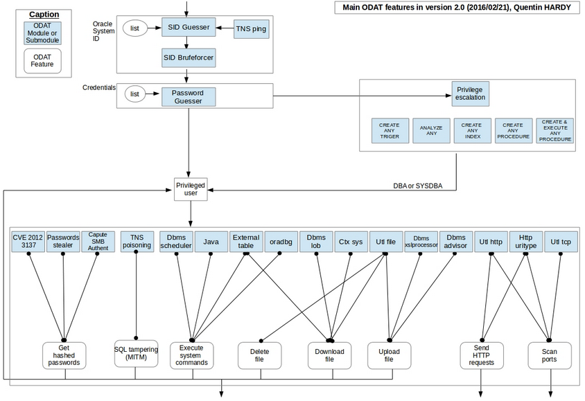

https://github.com/quentinhardy/odat
ODAT: Oracle Database Attacking Tool

Features
Thanks to ODAT, you can:
- search valid SID on a remote Oracle Database listener via:
- a dictionary attack
- a brute force attack
- ALIAS of the listener
- search Oracle accounts using:
- a dictionary attack
- each Oracle user like the password (need an account before to use this attack)
- execute system commands on the database server using:
- DBMS_SCHEDULER
- JAVA
- external tables
- oradbg
- download files stored on the database server using:
- UTL_FILE
- external tables
- CTXSYS
- DBMS_LOB
- upload files on the database server using:
- UTL_FILE
- DBMS_XSLPROCESSOR
- DBMS_ADVISOR
- delete files using:
-
- gain privileged access using these following system privileges combinations (see help for privesc module commands): (NEW : 2016/02/21)
- CREATE ANY PROCEDURE
- CREATE PROCEDURE and EXECUTE ANY PROCEDURE
- CREATE ANY TRIGER (and CREATE PROCEDURE)
- ANALYZE ANY (and CREATE PROCEDURE)
- CREATE ANY INDEX (and CREATE PROCEDURE)
- send/reveive HTTP requests from the database server using:
-
- scan ports of the local server or a remote server using:
- UTL_HTTP
- HttpUriType
- UTL_TCP
- capture a SMB authentication through:
- an index in order trigger a SMB connection
- exploit some CVE:
- the CVE-2012-3137
- pickup the session key and salt for arbitrary users
- attack by dictionary on sessions
- the CVE-2012-????: A user authenticated can modify all tables who can select even if he can't modify them normally (no ALTER privilege).
- the CVE-2012-1675 (aka TNS poisoning attack) (NEW : 25/03/2016)
- search in column names thanks to the search module:
- search a pattern (ex: password) in column names
- unwrap PL/SQL source code (10g/11g and 12c)
- get system privileges and roles granted. It is possible to get privileges and roles of roles granted also (NEW : 21/02/2016)